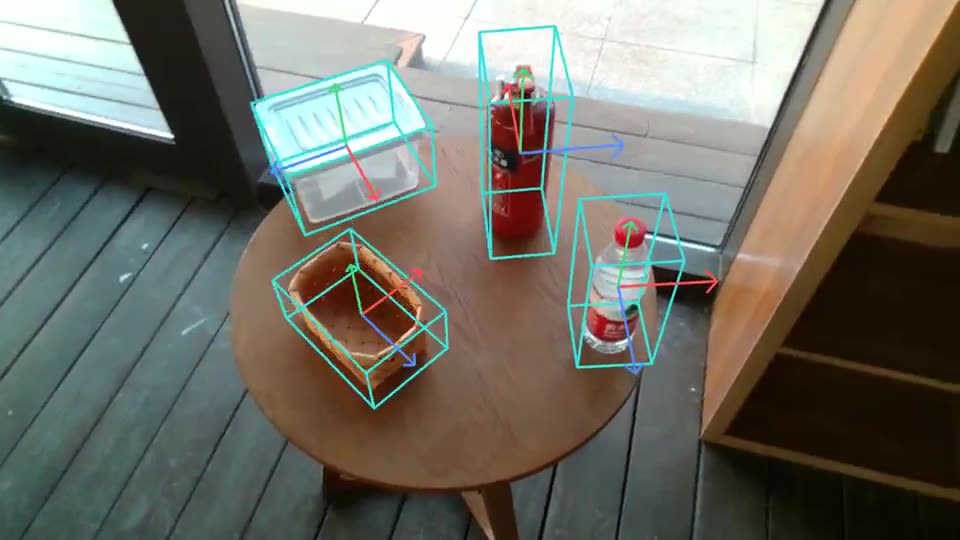
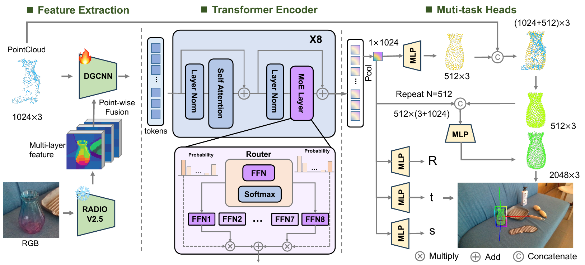

Lift visual features to 3D
A frozen RADIO backbone extracts dense image features. Aligned depth and the object mask associate those features with observed 3D points.
From one segmented RGB-D observation, directly predict 6D pose, metric size, and camera-frame completed shape.
1 Fudan University 2 Shanghai
Innovation Institute
* Equal contribution † Corresponding author

01 — METHOD
F2G-Pose uses the observed RGB-D geometry and dense visual features together. Its two output branches share one learned representation.
A frozen RADIO backbone extracts dense image features. Aligned depth and the object mask associate those features with observed 3D points.
DGCNN builds local geometric tokens; a Mixture-of-Experts Transformer brings in object-level context.
Parallel heads produce the 6D pose and metric size, plus a completed point cloud in the camera frame.

02 — FILM
Real and synthetic scenes, pose comparisons, three selected shape predictions, and recorded robot cases. The film is silent and has English text on screen.
03 — SELECTED EXAMPLES
Each clip plays only when requested. The overlays are predictions on segmented RGB-D inputs; the selected examples do not represent aggregate benchmark accuracy.
ROPE / COMPARISON
Two pose overlays on the same frames from ROPE scene 000300.
ROPE / SCENE 000354
Frame-wise predictions for a donut, helmet, pineapple, rice cooker, and teapot.
ROPE / SCENE 000064
Six everyday categories in another continuous ROPE interval.
ROPE / MATERIALS
Selected transparent red wine glass and specular dish cases.
Three user-selected SOPE examples from a 3,000-video review. Each shows the saved 2,048-point network prediction from one RGB-D observation. These are qualitative examples; the eraser passes all original geometric screening thresholds, while the chess piece and flute do not.
SOPE / ERASER
Direct prediction from one RGB-D input. Rank 2 in the manual review.
SOPE / CHINESE CHESS
Direct prediction from one RGB-D input. Rank 32 and the film’s pipeline example.
SOPE / FLUTE
Direct prediction from one RGB-D input. Rank 43 in the manual review.
RECORDED ROBOT SCENES
Mug and cup, hammer, and transparent bottle cases. Each scene shows four representative keyframes from an existing recording, held for 1.5 seconds each. These are not continuous online-control footage.
04 — PAPER RESULTS
These numbers follow the paper’s evaluation protocol. Independent results for the released weights are reported in the code repository README.
AUC values are percentage points. Throughput is model inference on the paper’s hardware and protocol; the film’s 30 FPS playback is separate.
05 — READ & BUILD
Find the complete method, evaluation details, installation instructions, and pretrained checkpoint.